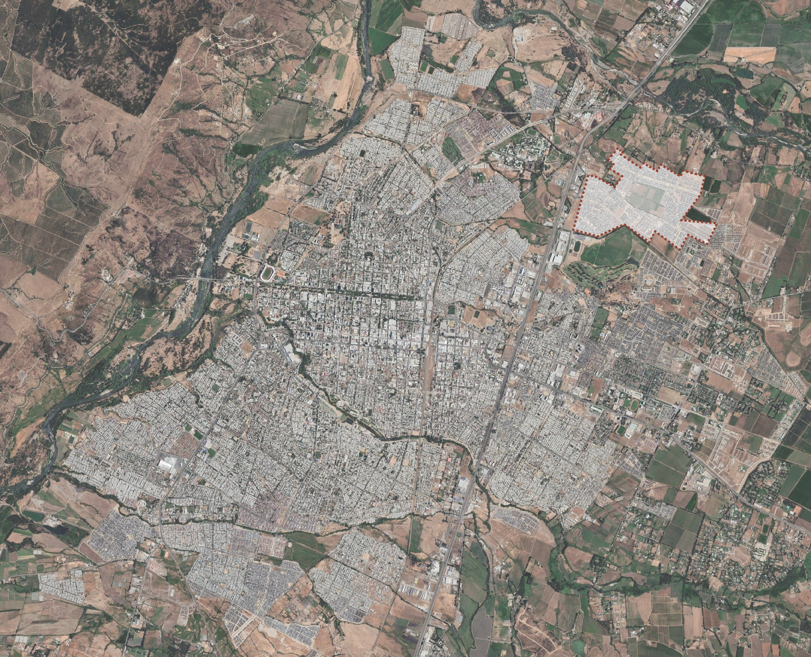
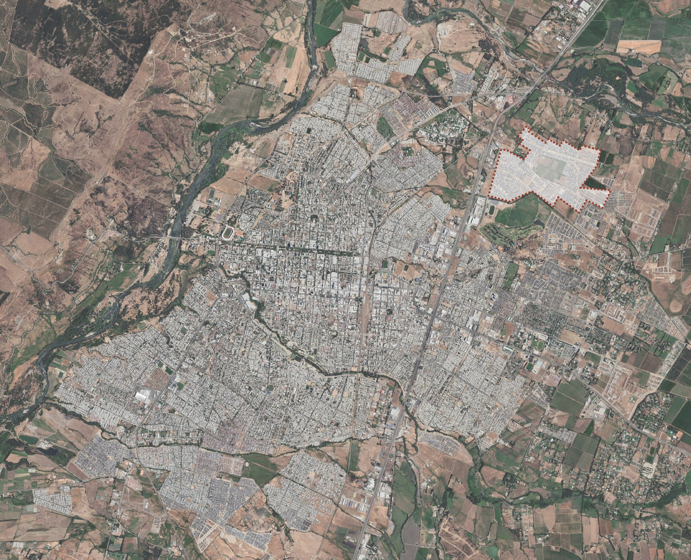
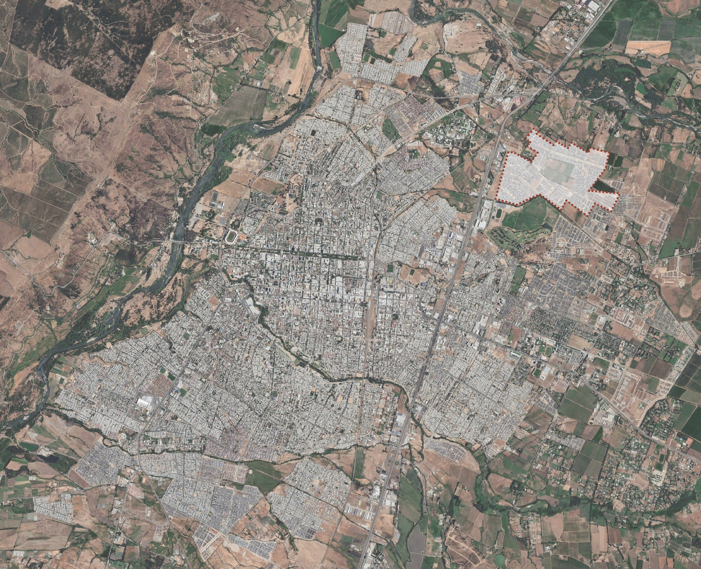

Durante los últimos, la ciudad de Talca se está densificando a gran velocidad hacia las periferias, lo que provoca un problema de conectividad y falta de oportunidades para quienes, a través de subsidios habitacionales, pueden tener su casa propia
La Villa Bicentenario ubicada en la periferia Nororiente de la ciudad de Talca, puesto que es la población que ha crecido con mayor velocidad durante los última década y continua en crecimiento.

La rápida densificación de viviendas en serie, provoca la constante llegada de nuevas personas al sector, y la poca infraestructura de espacios públicos impide la interacción entre vecinos y eso conlleva a la desorganización. Además, en esta zona, se crea el Plan de Crecimiento, desde hace 3 años, por la Inmobiliaria Independencia (constructora de todas las viviendas del sector), que implementa equipamientos como; Colegio, Centro Medico y Comisaría, pero posicionados en la Villa Valles del Country, viviendas que rondan los 2400 UF, a comparación de la Villa Bicentenario que rondan las 1250 UF. Esta centralización repercute negativamente en los vecinos, ya que, concentra todo en un punto dejando desplazados a los vecinos de esta zona.
Fotografías de las viviendas donde se pueden observar las diversas tipologías del barrio.


La Villa Bicentennario está llena de situaciones particulares que llaman la atención a la hora de hacer el estudio, como la feria que se instala los días jueves y miércoles en la gran avenida principal. También al ser una villa con viviendas sociales, hay muchas familias alrededor, lo que se aprecia más al acercarse al Jardín Infantil Junji.
Los Negocios de barrio no pasan desapercibidos, ya que son lo único que genera una vida en comunidad hasta el momento, ya que los parques/plazas que hay cerca están en muy mal estado y carecen de un buen equipamiento para la comunidad.
Una serie de esquemas se hicieron con el fin de poder llegar a ver las problemáticas a resolver del lugar.
Debido a que la zona presenta una serie de problemas, es necesario crear un plan maestro que de solución a los problemas que los vecinos viven día a día, no basta con implementar un edificio, pues el problema abarca mucha situaciones.
El Master Plan contemplaría una serie de volumenes que darían respuesta a diversos problemas, estos contemplarían reciclaje, cafetería, una biblioteca, un centro cultural, espacios deportivos y sociales, y además un edificio administrativo, que pondría fin a la gran distancia que tienen que recorrer los vecinos para llegar al centro de Talca.
El croquis es fundamental para visualizar el programa que el proyecto prodría llegar a incorporar.


El proyecto finalmente llega a resolver las distintas problemáticas del sector que no pueden ser resueltas con un sólo edificio, entonces una serie de vólumenes con distintos programas dan solución a la vida cotidiana de los vecinos del sector.


Nos ayudarías mucho compartiendo en facebook nuestro proyecto.
Puedes seguir el proceso de este proyecto en Miro haciendo click aquí